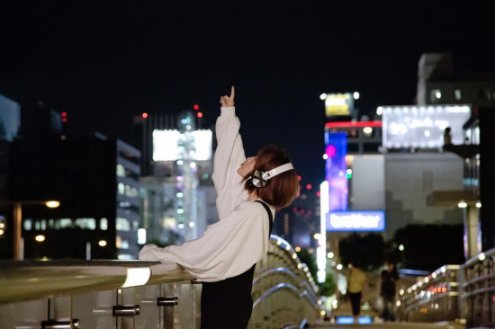

众声喧哗的世界，需要安静且坚定“最好的耳朵”
出道11年“小球”庄鹃瑛温暖的歌声、满满的能量陪伴许多孤单、失落与需要力量的人，从棉花糖到主演电影《52赫兹我爱你》，大大小小的现场演出也都有出色的表现，用文字和音符穿透那些寂寞茫然与失措， 更被喻为“一定要听她现场唱歌的女歌手！”而她在TICC台北国际会议中心举办个人首次大型售票演唱会“星星、城市与我们”，门票完售，12月即将开展内地7座城市的巡回演出。
个人首次大型售票演唱会之余，小球也紧锣密鼓筹备了个人的第二张创作专辑，之前受邀首度演唱恐怖片电影主题曲《替》，看到《粽邪》开出千万票房的好成绩，蜡烛多头烧的她表示， “说来也神奇，忙着忙着，就来到了9月，许多曾经多虑焦躁的心，随着忙碌的工作竟然才会产生新的安全感。”也很开心自己是幸运的，目前已完成新专辑的四支MV拍摄， 小球透露接下来最后一支MV将在10月13日和歌迷们一起完成，小球想和大家说：“时间或许不会给我们确切答案，但过程却早就让我们成为一个有故事的人。”

听小球唱歌，像从陌生人那里得到拥抱；听小球唱歌，像是听自己的心声。“愿成为最好的耳朵，最安心的出口”于是新专辑的概念浮现， 专辑名称《巴斯特耳朵》取材瑞典最高文学奖小说《巴斯特的耳朵》，但重新赋予专属于小球的诠释，是最好的耳朵、最佳的听众，毫无后顾之忧为你分担，给予力量！ 小球说：“在这么多资讯量、科技爆炸的世代，很多人习惯说、很少听，包括我自己。我们都试着在练习与寻找最好的耳朵。”专辑照片拍摄前往苗栗取景，特别建了一个树屋天窗， 打造秘密基地氛围，就像是在倾听大自然森林的秘密，每个人对于出口很重要，树洞也呼应专辑名称《巴斯特耳朵》，小球感性写道“我渴望成为你的树洞，代谢你的悲伤，安置你的释放 ，而我的树洞是一首首无法口述清楚的过去、现在及未来，将熟悉或陌生的你们搜集打包、入歌。”不过她至今依然觉得拍照是一门很深的学问，摄影师鼓催她对着镜头放电，让小球哭笑不得猛求饶。
这次的服装延续小球喜好自由自在的宽松风格，但又不失个性的特色，她也首度公开自己外号的由来，以前高中时跟同学相约在天桥的两端，小球在桥上跑过去和同学会面， 呼啸而过的风全灌进她的衣服里，同学远远看到她像极一颗澎澎的小球，因此有了这个可爱的外号沿用到现在。

经历个人第一张创作专辑《星之所向》的阳光、坚定和果敢，第二张专辑《巴斯特耳朵》挖掘出更多小球内心的想法，以及跟着时间一路走来的种种情绪和感受，不只望向阳光， 更凝视阴影里头的点点不安思绪，不只是舞台上的开朗，更展现沉淀后的种种挫折矛盾，小球吸收与感受，用自己的语汇和方式共处这个世界，如果说《星之所向》是灿烂夜空，而《巴斯特耳朵》则是多变月亮， 有无比黑暗的时刻，也有皎洁明亮的时光，一面寻求疗愈自己的方法好找回能量，一面也期待能继续抚慰更多同类给出满满能量，当一个恰如其分的树洞，你最好的耳朵，最安心的出口。 新专辑首波歌曲《续》首播就获取了大量歌迷的关注，12月15日开始，小球即将开始在内地七座城市的巡回演出，将最美好的声音带给所有的歌迷。“愿成为最好的耳朵，听见宇宙里的微弱。”